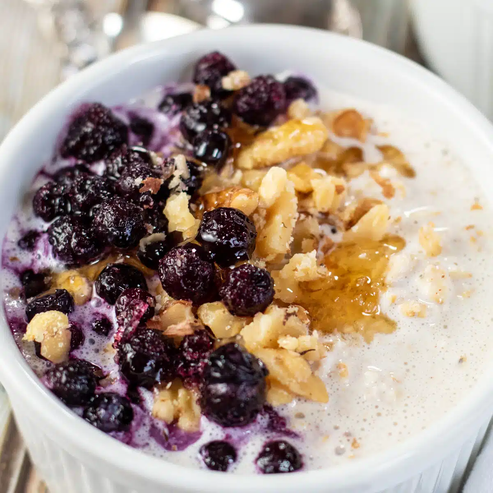

Overnight Oats with Yogurt

Description
Are you craving something really good for your gut biome? Try this overnight oats with yogurt recipe topped with your favorite fruits and desserts! This recipe aims to make healthier breakfast fun, tastier, and easier by prepping the overnight oats ahead of time and utilizing dried fruits instead.
Ingredients
- 1/2 cup quick cooking oats
- 1 tbsp chia seeds
- 1 tbsp honey
- 3/4 cup water
- 2 bags different dried fruits
- 1 tub of yogurt of choice
- Nuts of choice
Steps
- In a medium container of choice for your overnight oats, combine the quick cooking oats and chia seeds.
- Add honey and water into the mixture and stir until combined.
- Place the closed container in the fridge for five minutes. Stir again for 20 seconds to form an even mixture. Keep the overnight oats in the fridge until the next morning.
- The next day, assemble your bowl by placing the overnight oats on one side of a bowl, and your yogurt of choice on the other side. Top your bowl with your favorite dried fruits and nuts.